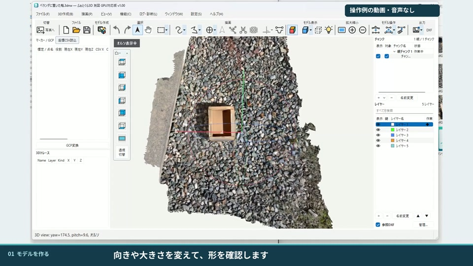
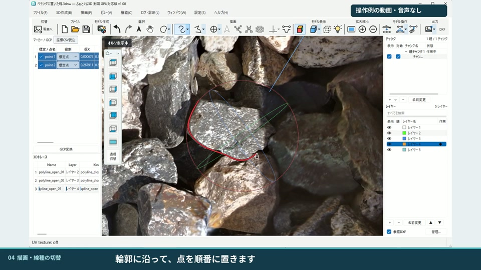
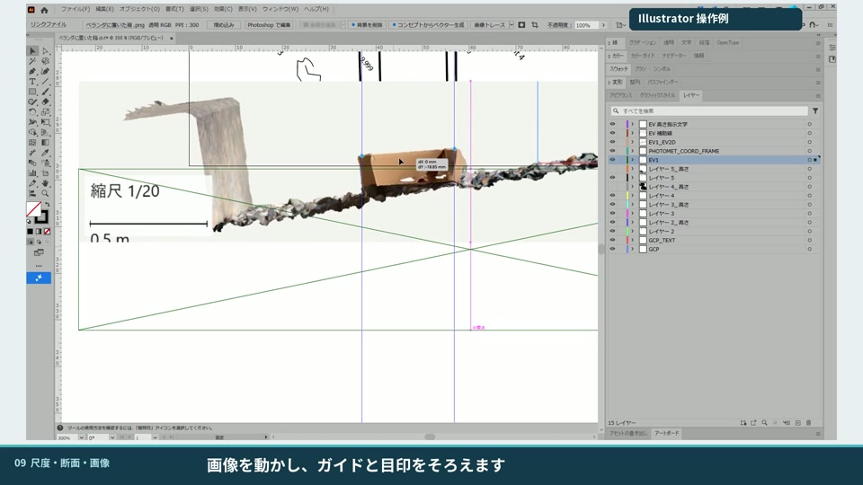

考古学・発掘調査のための3D・測図ソフト
写真から、
現場の図面へ。
3Dの上に、なめらかな曲線を。
描いた線を、レイヤーごと図面へ。
写真から3Dモデルを作り、その上でスプラインをトレース。曲線とレイヤーを保ったDXF出力まで、一つのソフトでつなぎます。
- スプライントレース
- スプラインDXF出力
- レイヤー制御

- 写真を読み込む
- 3Dをつくる
- 座標・尺度を合わせる
- 線・断面を描く
- 図面へ出力
FROM PHOTOS TO DRAWINGS
立体の記録を、
使える図面につなげる。
遺構や遺物の形を残し、実測図をまとめる。
現場と図面作成の間にある作業を、一続きに。
01 つくる・整える
写真を立体に。
位置と尺度を合わせる。
複数方向から撮影した写真を読み込み、3Dモデルを作成。水平・尺度・高さの調整や、マーカーと座標CSVを使った座標合わせに対応しています。
- 写真からメッシュ・テクスチャを作成
- PMマーカー・AprilTag・手動GCPに対応
- 標準・高速・高精細の設定とカスタム保存
02 見ながら描く
スプラインで、
輪郭をなめらかに。
モデル表面に点を置き、石や遺物の輪郭をなめらかなスプラインでトレース。構成点の追加・移動・削除で曲線を調整し、必要に応じて折れ線へ切り替えられます。
- 3Dモデル上でスプラインを描画・編集
- レイヤーごとに表示・非表示、ロックを制御
- 複数レイヤーの色・線の太さをまとめて変更
- EV（断面）作成・複数モデルの作図にも対応

03 図面につなぐ
描いた曲線を、
スプラインのままDXFへ。
標準DXFでは、トレースした曲線をSPLINEとして出力できます。レイヤー分けも引き継ぎ、CADで曲線として編集する仕上げ作業へ。縮尺を指定した画像出力と組み合わせて図面をまとめられます。
- 曲線をSPLINEとして書き出す標準DXF
- レイヤーを分けたまま、線を出力
- Polyline出力・縮尺と解像度を指定した画像出力
動画10では、CADで出力データが「Spline」として扱われる様子を確認できます。
右の画面はIllustratorでの利用例です。IllustratorやCADソフトは本製品に含まれません。

WATCH THE WORKFLOW
実際の操作を、
見たいところから。
写真から3D、座標合わせ、図面出力まで。
字幕付き・音声なしの16本のチュートリアル。
選んだ動画だけを読み込みます。
再生ボタン、または一覧から動画を選んでください。画面や操作はチュートリアル制作時のものです。
チュートリアル一覧
16 LESSONSBEFORE YOU START
お使いのPCを、
ご確認ください。
GPUなしでも、CPUで処理できます。
GPU使用時よりも処理に時間がかかります。
写真枚数・解像度・設定に合わせてご利用ください。
- OS
- Windows 10（1809以降）/ 11・64bit
現在の確認環境はWindows 11です。 - CPU / GPU
- GPUなしでもCPUで動作します。
CPU処理は時間がかかります。GPUを利用する場合はNVIDIA CUDA対応GPU（Compute Capability 6.1以上）が対象です。 - メモリー
- RAM 16GBを設計時の目安にしています。GPU利用時のVRAM目安は6GBです。
動作保証の最低構成ではありません。写真・設定により必要量が変わります。 - ストレージ
- アプリ本体 約5GB ＋ 作業用の空き容量
書き込み可能な内蔵SSDなどを推奨。写真・中間データ・成果物の保存領域も必要です。 - 用意するもの
- 対象を複数方向から撮影した写真。
測量座標を与える場合は標点と座標CSVも準備します。
QUESTIONS & ANSWERS
よくある質問
写真を入れれば、自動で実測図になりますか？
写真から3Dモデルを作成し、そのモデルを見ながら必要な線をトレースする流れです。図面として残す線の選択、作図、成果物の確認は利用者が行います。
GPUを搭載していないPCでも使えますか？
はい。GPUを搭載していないPCでもCPUで動作します。ただし、GPU使用時よりも処理に時間がかかります。写真枚数・解像度・処理設定によって所要時間や必要なメモリーが変わります。
CADやIllustratorと一緒に使えますか？
トレースした線をDXFへ、モデルの表示を画像へ出力して利用できます。動画ではIllustrator、DWG TrueView、nanoCADでの確認例を紹介しています。読み込み時の単位・縮尺・レイヤーや、曲線の扱いを利用先のソフトで確認してください。
操作方法を見返せますか？
アプリ内のチュートリアル動画と操作説明から確認できます。このページでも16本の操作動画を見られます。動画は字幕付き・音声なしです。
どのくらいの精度で作成できますか？
撮影条件、対象物、写真の重なり、標点の配置などによって結果は変わります。必要に応じて既知の距離や検証点と照合し、用途に合わせて確認してください。このページの作例は精度の保証値を示すものではありません。
ふぉとぐら3D 測図 / PhotoMet
現場の記録から、
図面づくりまで。
買い切り型のWindows向けデスクトップソフト。
月額料金のかからない、一度の購入で利用する製品です。
先行限定価格（予定）
¥3,980
通常価格（予定） ¥9,800 / 買い切り
販売開始から2026年12月10日まで（日本時間）
通常価格（予定）
¥9,800
買い切り
現在はご購入いただけません。販売開始後、Lemon Squeezyの購入ページをご案内します。購入条件・最終のお支払い金額は販売開始時にご確認ください。
製品について問い合わせる